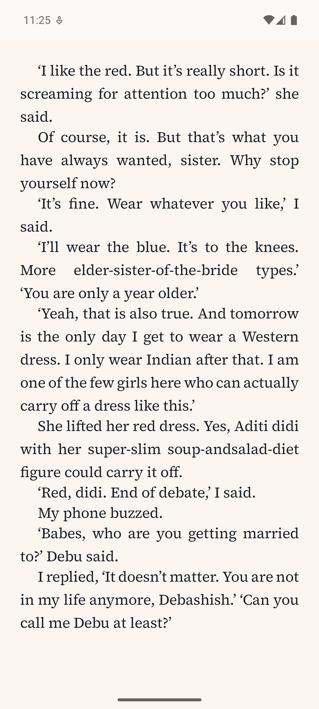
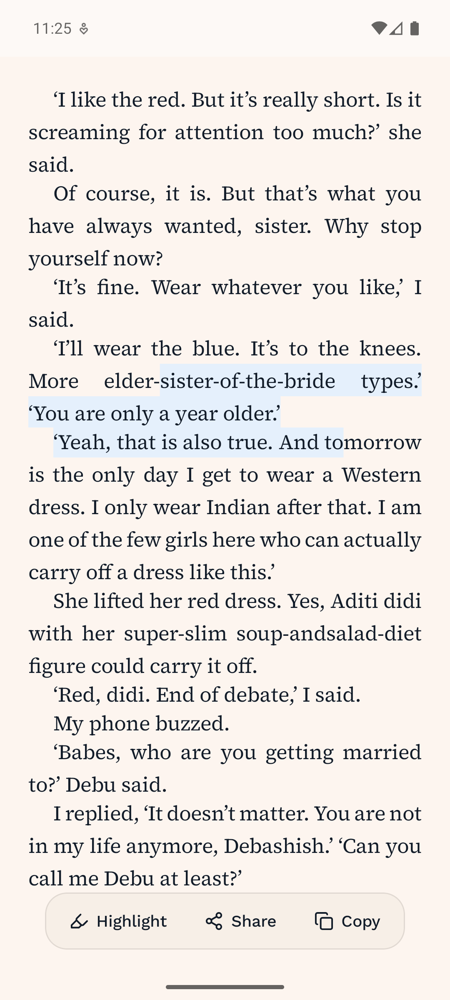
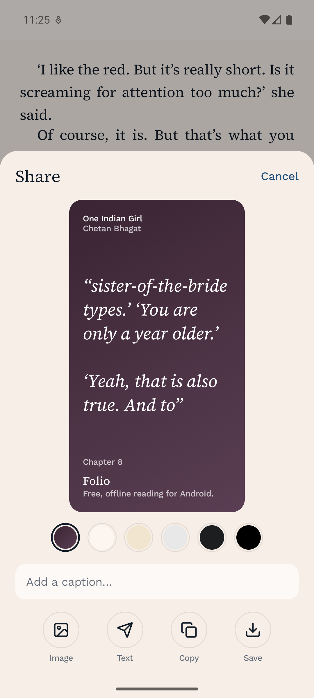
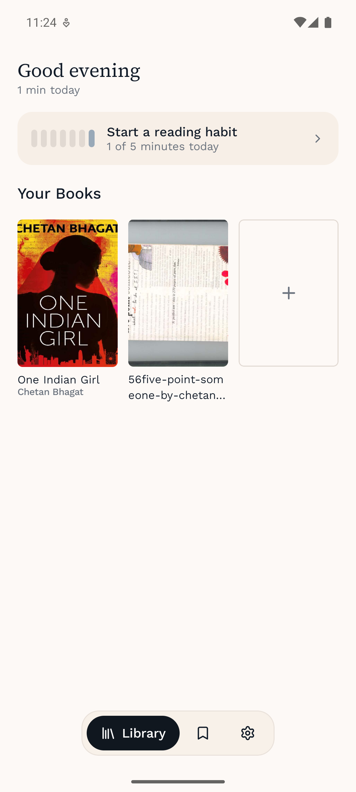

An Android reading app for EPUB, PDF and plain text.
No account. No sync. No analytics. No ads. Quire does not declare the
INTERNET permission at all — so your books cannot leave your
device, whatever anyone later decides.
Free and open source, MIT licensed. Android 8.0 and above.
Most apps promise privacy in a policy. Quire's manifest removes the
INTERNET permission outright, and a test fails the build if it ever
comes back — including through a dependency, which is how it got in the first
time. Android then refuses the socket. There is nowhere for your reading to go.




A PDF becomes actual paragraphs, so type size and themes work on it — rather than a fixed page you pinch at.
Justified, hyphenated, first-line indents, no paragraph gaps, a measure capped for readability, and stranded lines pushed to the next page.
Position is stored by character, so it survives changing the type size, the font, or the theme — and resumes where you actually were.
Paper, Sepia, E-ink, Night and Black — researched against what e-readers and real electrophoretic panels do. E-ink is strictly greyscale.
Long-press a word, drag to choose a passage, keep it — and share it as a picture dressed in any of the app's palettes.
A daily goal, a streak, and home-screen widgets. One gentle reminder a day, and none at all on a day you have already read.
A photographed book has no text to reflow, so Quire shows the pages as they were printed and says so — rather than OCR inventing words the author never wrote.
MIT licensed, built in the open, with the reasoning for each decision written down in the repository rather than lost.